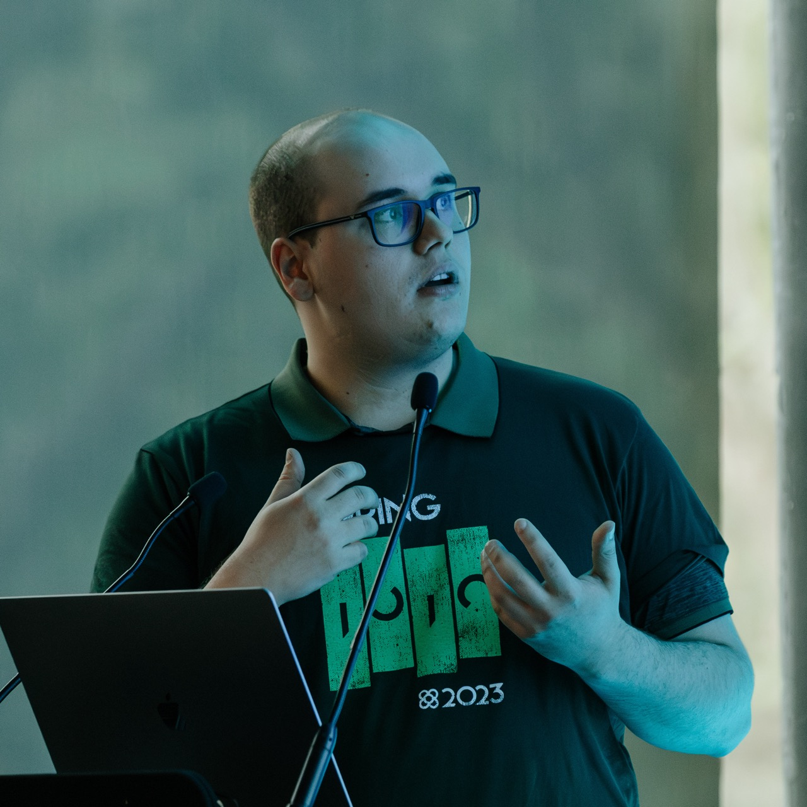
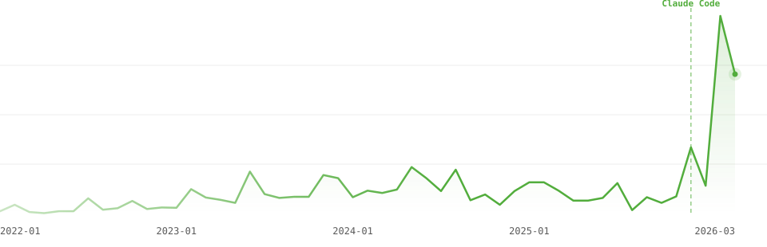
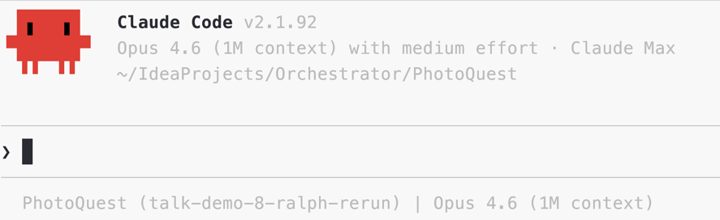
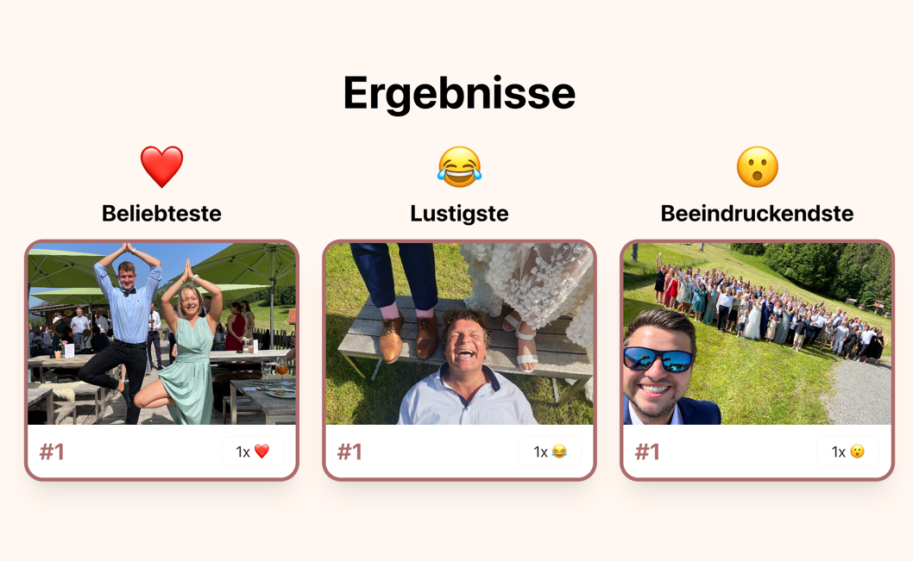

Thomas Schilling · tschuehly.de
Spring I/O 2026 · Barcelona

⬇ Add me on LinkedIn
@tschuehly · tschuehly.de · Stuttgart


A photo reaction game on a beamer. The manager starts a round, guests join via QR code. Guests see the photos on the beamer and spend their reaction budget (3 ❤️ + 3 😂 + 3 😮) during a timer. Top 3 photos per category are revealed at the end.
An agentic coding tool that operates in a loop:
Read → Plan → Act → Observe → Repeat
class InvalidTimerDurationException : PhotoQuestException(
"Die Timer-Dauer muss zwischen 1 und 30 Minuten liegen.",
"Timer duration must be between 1 and 30 minutes"
)
if (timerSeconds < 60 || timerSeconds > 1800) throw InvalidTimerDurationException()
Your stack is your advantage.
Checkpoints
Wrong direction? /rewind. Want to branch? /branch.
Experimentation is free.
Separate context window.
Your session stays lean.
"Research X with a subagent"
Browser (EventSource / HTMX)
↕ HTTP SSE stream
Spring Controller (Flux<ServerSentEvent>)
↕ Reactor Sink
NotificationService (listener thread)
↕ JDBC polling pgConn.getNotifications(500ms)
PostgreSQL LISTEN/NOTIFY
↑ pg_notify() called by business services
claude -p "query" — headless mode for scripting
@claude in PR comments — GitHub App triggers a GitHub Actions workflow
Iteration 1: no config, no skills, no plan
❯ A photo reaction game on a beamer. The manager starts a round, guests join via QR code. Guests see the photos on the beamer and spend their reaction budget (3 ❤️ + 3 😂 + 3 😮) during a timer. Top 3 photos per category are revealed at the end.No tests written.
8 bugs I had to find by hand.
The whole REVEAL state skipped.
What if Claude had knowledge, skills, and a plan?
A new deveveloper onboards once.
Claude onboards every session.
Context is how you onboard.
Claude hardcoded 6 cards per A4 sheet.
Reality: 1 card per A6 page.
The agent only knows what's in context.
CLAUDE.md
1 Start with 5 lines
2 Use Claude Code → observe what goes wrong
3 Undesired behaviour → add a rule
4 Repeat
Every rule needs to earn its place through a real failure.
# Critical Rules - Compile after .kt changes: ./gradlew compileKotlin compileTestKotlin - Verify before done: never mark a task complete without proving it works (run tests, demonstrate correctness) - Multi-instance safe: no in-memory state for dedup/guards; use DB checks. AdvisoryLock.kt for distributed consensus
.claude/rules/
.claude/rules/ ├── kotlin-conventions.md → src/main/kotlin/** ├── viewcomponent.md → src/main/kotlin/page/** ├── tailwind-daisyui.md → src/**/*.html ├── testing.md → src/test/** └── payment.md → src/**/payment/**
Each file loads only when Claude touches matching paths.
Auto-memory — local, not in git
Claude takes notes across sessions — stored locally, not in git
/context shows where you're spending it.
/compact manual compression.
Why I don't use /compact
Performance degrades as context fills up
Resuming a stale session re-reads everything uncached
If a senior dev wrote down how they approach architecture, git flow, and domain knowledge — that's a skill.
Working with an agent forces you to write it down.
| CLAUDE.md | Skill | |
|---|---|---|
| Loads | Once at session start | Descriptions at start, full content when invoked |
| Best for | "Always do X" rules | Reference docs, repeatable workflows |
| Context cost | Always present, drifts from attention | Fresh context at moment of action |
Skills load fresh context at the moment of action.
/interview AI interviews YOU before implementation
/tdd-task Strict TDD: RED → GREEN → REFACTOR
/test Run tests, report failures only
/commit Create feature commits
.claude/skills/commit/SKILL.md
--- name: commit description: Group uncommitted changes into feature commits. --- 1. Run `git status` and `git diff` to understand all changes 2. Group changed files by logical feature 3. Stage and commit each group with action-oriented message 4. Repeat until all changes are committed
"If an AI generates code from a spec, the spec is now the highest-leverage artifact for catching errors."
— Thoughtworks, Deer Valley 2026
Rock solid specs with /interview
1. Overlay on thumbnail +---------------------------------------+
2. Tap to enlarge + react | +--------+ +--------+ |
| | Photo | | Photo | |
| +--------+ +--------+ |
| ❤️ 😂 😮 ❤️ 😂 😮 |
| +--------+ +--------+ |
| | Photo | | Photo | |
| +--------+ +--------+ |
| ❤️ 😂 😮 ❤️ 😂 😮 |
+--------------------------------------+
1. Overlay on thumbnail +--------------------------------------+
2. Tap to enlarge + react | +------------------+ |
| | | |
| | Photo (big) | |
| | | |
| +------------------+ |
| [❤️] [😂] [😮] |
| < prev | next > |
+--------------------------------------+
8 rounds → 20+ design decisions → 171-line spec
## Reactions
Each guest gets 3 ❤️ + 3 😂 + 3 😮
% confirm this is the correct cookie name
% can we prompt user to enable fullscreen?Claude suggested 10 changes
Forced to justify: 8 were unnecessary.
You're still the engineer. Understand each decision.
7 phases implemented, 17 tests passing
But the feature was unreachable.
Nobody asked: "How does the user get here?"
The /interview skill across 3 iterations
Iteration 2 Missed nav links
→ Added: mandatory topics + user stories
Iteration 3 Dead-end screens
→ Added: state transitions + terminal states
Iteration 4 26 user stories
→ Zero missing entry points
SKILL.md Iteration 2
Interview me relentlessly about every aspect… Use AskUserQuestion tool to ask about anything… Explore the codebase for code questions. Write the spec to a file.
SKILL.md Iteration 4
## Mandatory interview topics - Entry points - User journey start-to-finish - Edge cases - State transitions - Terminal states & dead ends ## Output format Spec MUST end with User Stories. Navigation stories come FIRST.
jvmskills.com
Hooks — deterministic in a non-deterministic world
Shell commands at lifecycle events — the ones I use
4 hook types
command — shell scripthttp — POST to a URLprompt — single-turn LLM evalagent — multi-turn verification| Event | Matcher | Hook | Does |
|---|---|---|---|
| PreToolUse | Bash |
git-guardrails.sh |
Block dangerous git commands |
Bash |
pre-commit-gate.sh |
Block commit if lint or compile fails | |
| PostToolUse | Edit|Write |
post-edit-lint.sh |
Feed lint violations back after every edit |
| SessionEnd | — | stop-uncommitted-check.sh |
Warn on uncommitted work |
Exit 2 = hard block. Claude cannot proceed.
# git-guardrails.sh
DANGEROUS_PATTERNS=(
"git push" "git reset --hard"
"git clean -fd" "git branch -D"
"git checkout \." "git restore \."
)
for pattern in "${DANGEROUS_PATTERNS[@]}"; do
if echo "$COMMAND" | grep -qE "$pattern"; then
echo "BLOCKED: '$COMMAND' matches '$pattern'" >&2
exit 2
fi
doneTEST_PATTERNS=(
"gradlew test " "gradlew test$"
"gradlew.*--tests"
)
for pattern in "${TEST_PATTERNS[@]}"; do
if echo "$COMMAND" | grep -qE -- "$pattern"; then
deny "Use the /test skill instead"
fi
done⏺ Bash(git stash && ./gradlew test --tests "*LoginTest")
⎿ BLOCKED: Use the /test skill instead of
running gradlew test directlyI need to serialize participants to JSON.
⏺ Added 1 line
3 + import com.fasterxml.jackson.databind.ObjectMapper# detekt.yml
ForbiddenImport:
imports:
- value: 'com.fasterxml.jackson.databind.ObjectMapper'
reason: 'Use tools.jackson.databind.json.JsonMapper
instead (Jackson 3)'That mistake can never happen again.
Anything you can put in a hook — put it in a hook.
MCP — Model Context Protocol
An open standard for connecting AI tools to external data sources.
| Category | Example |
|---|---|
| Error monitoring | Sentry |
| Issue tracking | Linear |
| Documentation | Library docs |
| Communication | Slack |
| IDE integration | JetBrains |
| Custom internal tools | Your own |
| Server | What it gives me |
|---|---|
| IntelliJ | Reformat, Rename, Run Configuration |
| Linear | Issue tracking |
| Sentry | Error investigation |
| JavaDoc Central | Up-to-date JVM library docs |
| Spring AI | Build your own MCP server |
sedreformat_fileexecute_run_configurationThe IDE becomes an API that the agent calls.
MCP Steroid — the agent is the user, not the developer
CLAUDE.md rule
Use mcp__jetbrains__reformat_file for formatting after editing
/restart skill — MCP wrapped in a reliable workflow
1. Stop old app: restart-app.sh stop
2. Start via MCP: execute_run_configuration()
3. Wait for ready: restart-app.sh wait
4. Check errors: post-bash-log-check.sh
Not every task needs the same workflow.
Scope grows. Plan before you type.
When Claude keeps guessing wrong.
Requirements only exist in your head.
When the “what” isn’t obvious — only the “why”
Iteration 1 vs Iteration 2
| Iteration 1 (no config) | Iteration 2 (full setup) | |
|---|---|---|
| Tests | 0 | 37 |
| Design decisions | 0 (Claude guessed) | 20 (interview) |
| CLAUDE.md rules added | 0 | 8 during session |
| Side-terminal sessions | 0 | 3 |
Plans work — until the context window doesn’t.
/frontend-designagent-browser/simplifyThe agent isn’t a deterministic machine
One fresh agent per phase. No drift.
Interview → Spec → Plan → Phase 1 Agent → Phase 2 Agent → ...
"The day shift is thinking,
the night shift is Claude implementing"
— Matt Pocock
- [ ] RED: failing test
- [ ] GREEN: implementClaude ticks boxes in prose. No enforcement.
39 tests.
TodoWrite([
{content: "RED: failing test"},
{content: "GREEN: implement"}
])Every task is tracked state.
60 tests.
Instructions become tracked state.
Same branch, same prompt — two reviewers.
Different models. Different blind spots.
/sandbox and Docker Sandboxes
/sandboxFilesystem + network fenced at the OS level
microVM isolation — disposable, survives a rogue agent
handy.computer — speech-to-text
Worktrunk — git worktrees for parallel AI agents
| branch | new git branch |
| worktree | isolated working dir |
| Postgres | dedicated instance |
| LocalStack | dedicated S3 + email |
| IntelliJ | opens on this branch |
| Claude | runs in this shell |
/rebase-commit
fix compile, fix again, revert, retry…
Each with its feature + tests, independently reviewable
Each commit contains a feature and its tests
Engineering quality doesn't disappear when AI writes code.
It migrates to specs, tests, constraints, and risk management.
— Thoughtworks, Deer Valley 2026
When implementation is cheap,
the bottleneck moves to judgment.
Building bad software has never been easier.
curl -fsSL https://claude.ai/install.sh | bashObserve what goes wrong. Add a rule. Repeat.
Thomas Schilling
Everything from this talk
jvmskills.com/spring-io-2026
Consulting · Full Time
Spring I/O 2026 · Barcelona